07/09/2024 — Một bệnh nhân nam lớn tuổi bị khó thở
Bản dịch tiếng Việt của bài "An elderly male with shortness of breath" – Dr. Smith’s ECG Blog. Giữ nguyên toàn bộ 16 hình ảnh của bản gốc.
Một bệnh nhân nam ngoài 70 tuổi đến khu phân loại (triage) vì khó thở. Ông kể có đau ngực đáng kể ở vùng đáy xương bả vai bên phải kèm khó thở mới xuất hiện.
Điện tâm đồ 1 ở mốc thời gian ban đầu (time zero)

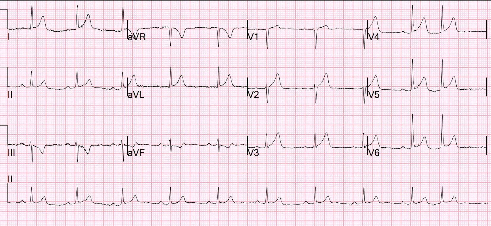
TÁI CỰC SỚM
ĐIỆN TÂM ĐỒ BẤT THƯỜNG
Kết quả đọc lại (overread) chính thức cuối cùng của khoa cấp cứu (ED): “tái cực sớm hay sóng T tối cấp, thay đổi tối thiểu so với trước (bản trước ở bên dưới)”
BẠN nghĩ gì?
Smith: có ST chênh lên tối thiểu ở V2-V6, nhưng không đạt tiêu chuẩn STEMI. Đây có phải ST chênh lên bình thường không? Máy tính nghĩ vậy, và bác sĩ cũng cho rằng điều đó hoàn toàn có thể.
Tuy nhiên, có biến dạng phần cuối QRS (terminal QRS distortion) ở chuyển đạo V3. Chúng tôi đã chứng minh rằng điều này KHÔNG BAO GIỜ xảy ra trong ST chênh lên bình thường!
Cũng có sóng T tối cấp (hyperacute T waves) kín đáo ở I, aVL và V2-V6.
Cũng có một sóng T (đảo ngược soi gương) âm rất sâu ở chuyển đạo III, và một sóng T dạng xuống-lên (down-up) ở aVF, cả hai đều gợi ý mạnh tắc LAD hoặc D1.
Điện tâm đồ trước đây, nhiều tháng trước, khi bệnh nhân bị chóng mặt:

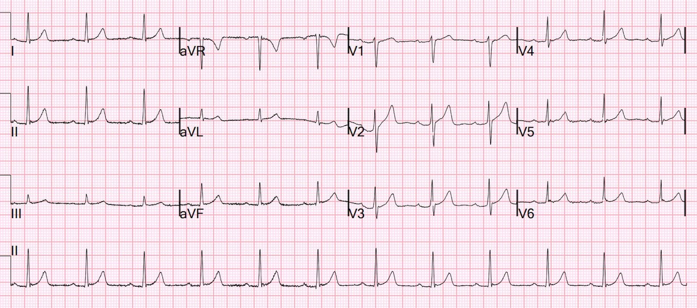
Lưu ý rằng sóng T nhỏ hơn nhiều, không có dấu hiệu nào ở thành dưới, và có sóng S hình thành rõ ở V3 (không có biến dạng phần cuối QRS)
Queen of Hearts trên điện tâm đồ đầu tiên:

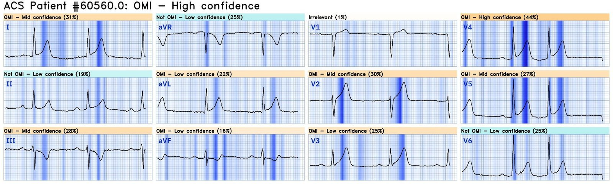
OMI với độ tin cậy cao
Queen of Hearts diễn giải điện tâm đồ cũ (trước đây) này:

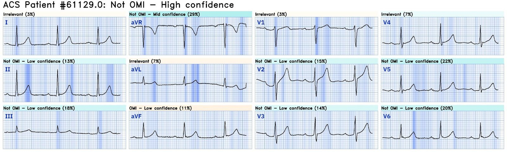
Không phải OMI với độ tin cậy cao
Bấm vào đây để đăng ký sử dụng Queen of Hearts
Những dấu hiệu này khiến bác sĩ phân loại rất nghi ngờ, nên cô ấy đã đưa bệnh nhân vào khu hồi sức cấp cứu.
Sau đó cơn đau của bệnh nhân tự hết sau 2 liều nitroglycerin ngậm dưới lưỡi và một điện tâm đồ khác được ghi
Điện tâm đồ 2 ở phút 16

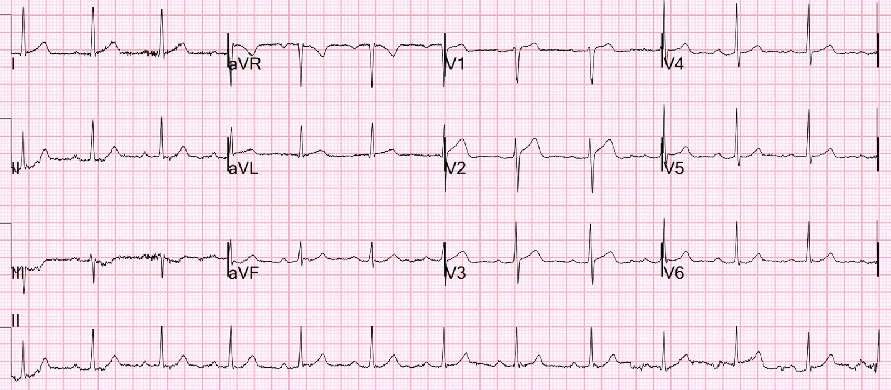
ST CHÊNH LÊN PHÙ HỢP VỚI TỔN THƯƠNG, VIÊM MÀNG NGOÀI TIM HOẶC TÁI CỰC SỚM
Đọc lại: như trên
Smith: Sóng T giờ đã nhỏ hơn NHIỀU. Sóng S đã được tái lập. Các dấu hiệu ở thành dưới bớt rõ hơn nhiều. Sóng T và ST chênh lên ở V2 vẫn rất đáng nghi và khác nhiều so với nền, nhưng nhìn tổng thể thì phù hợp với tái tưới máu.
Như vậy, LAD đã tự tái tưới máu (“tái thông”)
Queen trên điện tâm đồ 2:

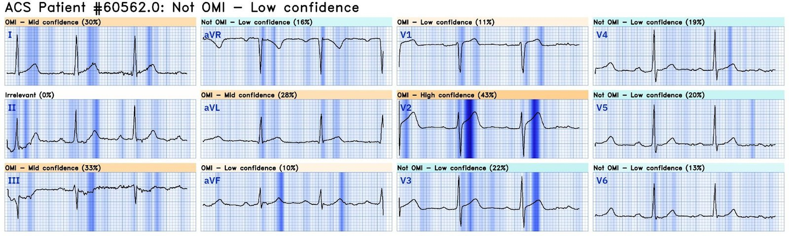
Không phải OMI, độ tin cậy thấp
Cô ấy cũng lo ngại về V2.
Điện tâm đồ 3 ở phút 21

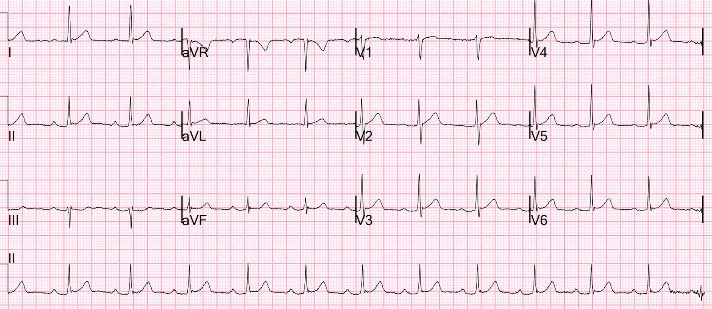
NHỊP XOANG KÈM BLỐC AV ĐỘ MỘT
Đọc lại: như trên
Smith: Hãy nhìn V2. Mọi dấu hiệu giờ đã hết.
Tuy nhiên, các đoạn ST vẫn còn tương đối thẳng.
Điện tâm đồ 4, 55 phút

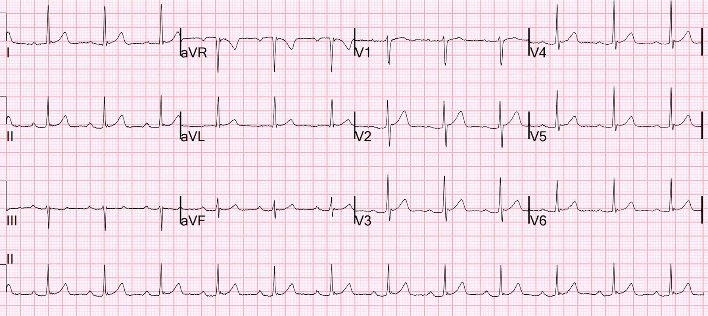
NHỊP XOANG KÈM BLỐC AV ĐỘ MỘT
Đọc lại: so với bản trước trong cùng ngày, sóng T tối cấp đã hết
Smith: Độ lõm hướng lên (upward concavity) đã được tái lập
Dưới đây là V1-V3 của tất cả các điện tâm đồ đặt cạnh nhau để so sánh:

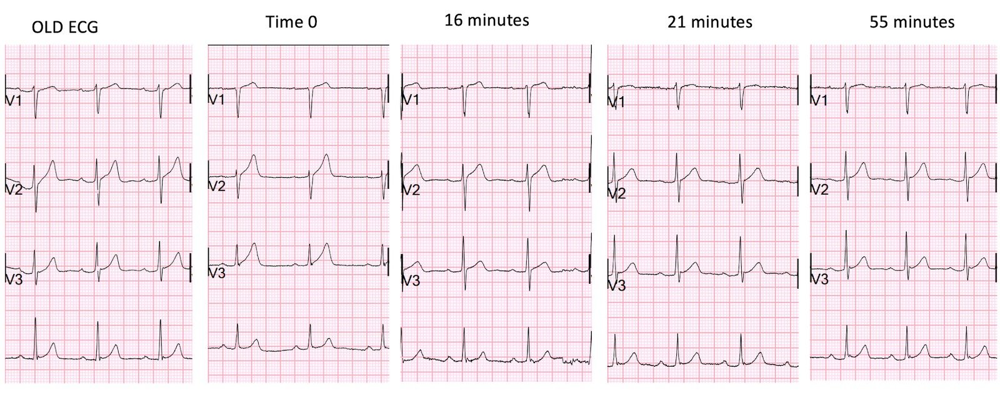
Mốc thời gian ban đầu là lúc đang tắc, phút 16 là lúc cơn đau đang hết
Hãy nhìn những khác biệt kín đáo của sóng T, biến dạng phần cuối QRS ở V3 tại thời điểm 0, sự tái lập sóng S ở V3 sau khi hết đau tại phút 16, sự giảm tổng kích thước và chiều cao sóng T tại phút 16 và sau đó, và sự tái lập độ lõm hướng lên tại phút 21 và 55.
Vì cơn đau đã hết và điện tâm đồ đang cải thiện, phòng thông tim (cath lab) không được kích hoạt. Hồ sơ ghi rằng “Tim mạch đồng ý rằng điện tâm đồ đầu tiên là tái cực sớm và tương tự bản trước,” nhưng khuyến nghị cho aspirin và bắt đầu heparin, và chờ kết quả troponin đầu tiên để bàn tiếp.
Họ cũng muốn chụp CT động mạch chủ, kết quả âm tính.
Đây là một “OMI thoáng qua”. STEMI thoáng qua (transient STEMI) đã được nghiên cứu và nhiều bệnh nhân trong số này sẽ tắc lại vào giữa đêm. Nếu bạn đã chuẩn bị cho điều này, các tác giả kết luận rằng có thể chấp nhận chờ đến sáng để can thiệp. Huyết khối ở LAD đoạn gần đã tan hoặc tan một phần, khôi phục dòng chảy.
Ở đây hoàn toàn không rõ là họ có nhận ra đây là một OMI thoáng qua hay không.
Lemkes và cs. Timing of revascularization in patients with transient ST segment elevation myocardial infarction: a randomized clinical trial. Eur Heart J 2018. Link toàn văn.
Troponin I đầu tiên trả về 48 ng/L
Điện tâm đồ 5, 143 phút

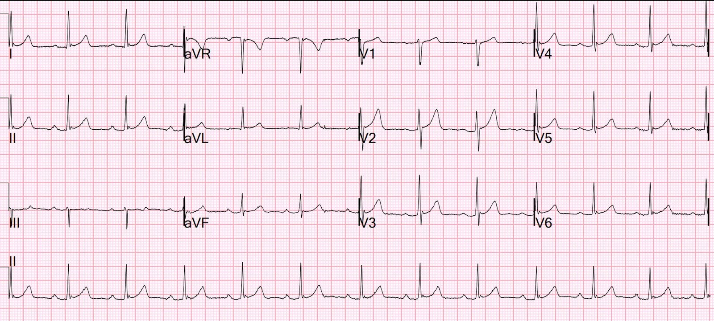
Không thay đổi đáng kể
Điện tâm đồ 6, 261 phút

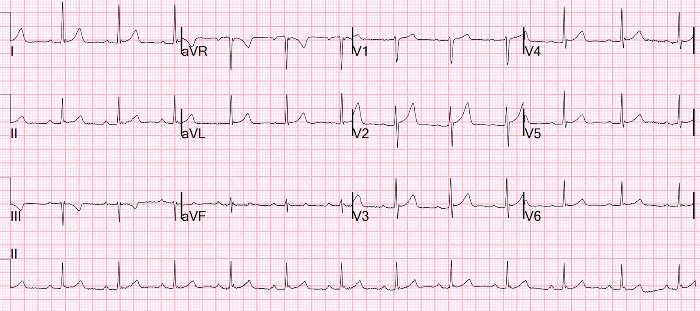
Như trên
Diễn biến troponin I độ nhạy cao (hs Troponin I) (đỉnh 1849):

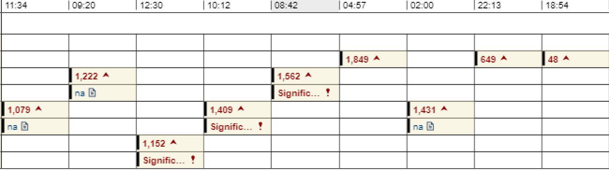
Siêu âm tim chính thức
TÓM TẮT
Phân suất tống máu thất trái ước tính là 74 %.
Áp lực tâm thu động mạch phổi ước tính là 27 mmHg + áp lực nhĩ phải.
Kích thước buồng thất trái bình thường.
Phân suất tống máu thất trái ước tính bình thường .
Không có rối loạn vận động thành
Điều này cho thấy hội chứng vành cấp (ACS) đáng kể có thể KHÔNG HỀ có rối loạn vận động thành (WMA)!!
Chụp mạch vành
–LAD là mạch có khẩu kính lớn, vòng qua mỏm tim
–Có một tổn thương hẹp dạng ống 80% ở lỗ xuất phát (ostial) LAD, tương đối trơn láng nhưng không giảm khi dùng lặp lại nitroglycerin trong mạch vành (IC)
–Có một D1 rất nhỏ, D2 trung bình và D3 nhỏ
Tổn thương ở LAD đoạn gần: Hẹp lỗ xuất phát 80%. Trước thủ thuật ghi nhận dòng chảy TIMI III. Sau thủ thuật có dòng chảy TIMI III.
Điện tâm đồ 7, 24 giờ

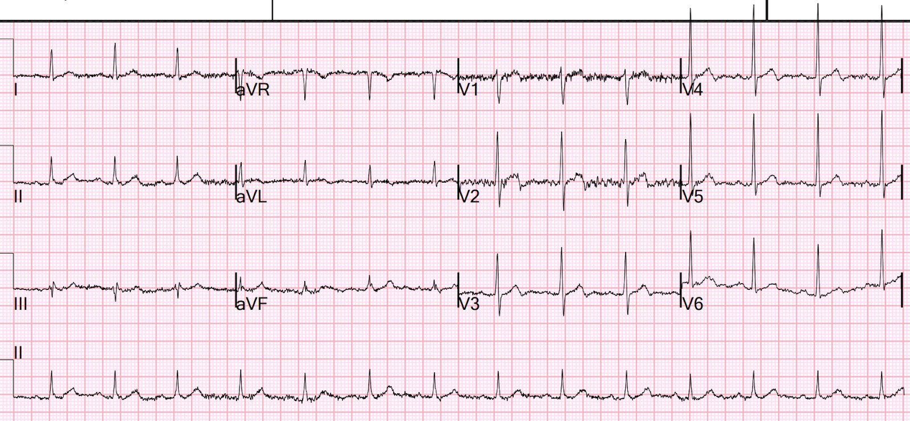
Giờ bạn thấy sóng Wellens!!
Sóng T đảo ngược phần cuối ở V2-V4 (hình ảnh Wellens kiểu A)
Bản này được bác sĩ tim mạch đọc lại ghi là “Điện tâm đồ bình thường”
Điện tâm đồ 8, 36 giờ

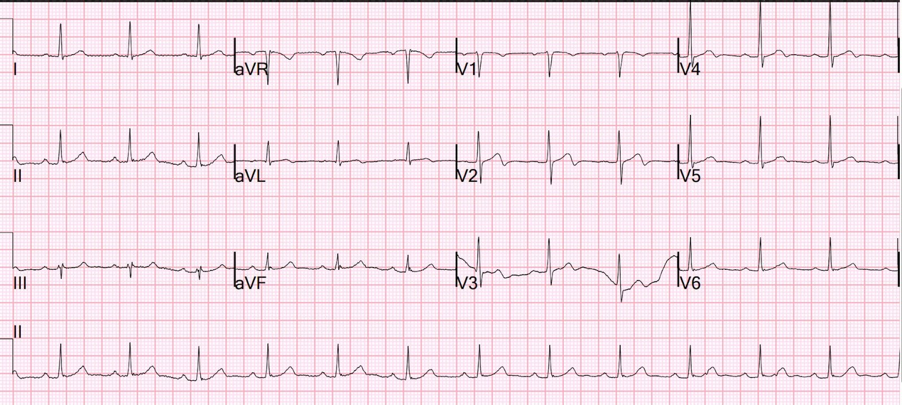
Ở đây cũng có sóng Wellens, nhưng ít rõ hơn.
Đặc biệt là V2, V3 có nhiễu, và V4 có một sóng Wellens kín đáo
Bản này được bác sĩ tim mạch đọc lại ghi là “Điện tâm đồ bình thường”
Wellens đã mô tả sóng T tái tưới máu, nhưng ông không liên hệ rõ ràng chúng với hội chứng mang tên mình. Xem bên dưới.
Sóng Wellens và sóng T tái tưới máu là cùng một thứ!
Sóng Wellens cho biết rằng, lúc bệnh nhân đang đau ngực, đã có tắc mạch. Sau khi tái tưới máu tự phát, ST chênh và/hoặc sóng T tối cấp hết đi và sóng T đảo ngược dần hình thành.
Xem các ca này (và tôi còn nhiều ca khác):
First ED ECG is Wellens’ (pain free). What do you think the prehospital ECG showed (with pain)? (Điện tâm đồ đầu tiên ở khoa cấp cứu là Wellens (hết đau). Bạn nghĩ điện tâm đồ trước viện (lúc đau) cho thấy gì?)
Classic Evolution of Wellens’ T-waves over 26 hours (Diễn tiến kinh điển của sóng T Wellens trong 26 giờ)
Why we need continuous 12-lead ST segment monitoring in Wellens’ syndrome (Vì sao cần theo dõi liên tục đoạn ST trên 12 chuyển đạo trong hội chứng Wellens)
If you had recorded an ECG during chest pain, what would it have shown? (Nếu bạn ghi điện tâm đồ trong lúc đau ngực, nó sẽ cho thấy gì?)
Bằng chứng cho Wellens là một hội chứng tái tưới máu
Theo hiểu biết của tôi, chưa có bài nghiên cứu nào chứng minh điều này. Từ kinh nghiệm của mình, tôi tin chắc rằng nếu được nghiên cứu chính thức, điều đó sẽ được xác nhận.
Tôi tin rằng tôi là người đầu tiên trình bày Wellens như một hội chứng tái tưới máu, trong cuốn sách của tôi, The ECG in Acute MI, các trang 22-23 và 51, và trong chương 27 về Tái tưới máu và Tắc lại.
Tôi nhận ra điều này dựa trên các bài báo của Wehrens và Doevendans về sóng T đảo ngược phần cuối như một dấu hiệu tái tưới máu sau dùng thuốc tiêu sợi huyết. Lưu ý rằng cả hai bài đều có Wellens là tác giả chính (senior author), và thật kỳ lạ là ông đã không liên hệ giữa hội chứng mang tên mình với hình ảnh điện tâm đồ giống hệt mà ông mô tả trong các nghiên cứu này!
Wehrens XH, Doevendans PA, Ophuis TJ, Wellens HJ. A comparison of electrocardiographic changes during reperfusion of acute myocardial infarction by thrombolysis or percutaneous transluminal coronary angioplasty. Am Heart J. 2000 Mar;139(3):430-6. PubMed PMID: 10689257.
Doevendans PA, Gorgels AP, van der Zee R, Partouns J, Bär FW, Wellens HJ. Electrocardiographic diagnosis of reperfusion during thrombolytic therapy in acute myocardial infarction. Am J Cardiol. 1995 Jun 15;75(17):1206-10. PubMed PMID: 7778540.

===================================
BÌNH LUẬN CỦA TÔI, bởi KEN GRAUER, MD (7/9/2024):
===================================
MẤU CHỐT để so sánh hai điện tâm đồ — là đặt cả hai điện tâm đồ cạnh nhau! Làm như vậy giúp nhận ra dễ dàng hơn rất nhiều mọi khác biệt có thể có giữa 2 bản ghi. Việc so sánh tối ưu gồm 2 Bước:
- BƯỚC #1: Bảo đảm rằng việc so sánh từng chuyển đạo với chuyển đạo tương ứng sẽ chính xác — bằng cách so sánh trục mặt phẳng trán và tăng tiến sóng R ở cả hai bản ghi.
- BƯỚC #2: Xem lần lượt từng chuyển đạo để tìm mọi khác biệt ST-T giữa 2 bản ghi.
Bệnh nhân hôm nay là một người đàn ông lớn tuổi đến khám vì khó thở và đau ngực ở đáy xương bả vai phải — nên bệnh nhân này đang có triệu chứng mới xuất hiện (nghĩa là chúng ta cần đặc biệt chú ý đến mọi dấu hiệu điện tâm đồ mới mà ta thấy).
- Hình 1 so sánh điện tâm đồ ban đầu — với một bản ghi trước đây được làm vài tháng trước, vào lúc ông không có triệu chứng tim mạch.
- Lưu ý rằng trục mặt phẳng trán khác nhau ở 2 bản ghi (QRS chủ yếu âm ở chuyển đạo III và đẳng điện ở aVF trong điện tâm đồ #1 — trong khi QRS hoàn toàn dương ở các chuyển đạo III và aVF trong điện tâm đồ #2). Điều này có thể giải thích việc sóng T ở chuyển đạo III của điện tâm đồ #1 bị đảo ngược (điều mà đôi khi có thể là bình thường khi QRS ở chuyển đạo này chủ yếu âm) — trong khi sóng T ở chuyển đạo III của điện tâm đồ #2 dương.
- Tăng tiến sóng R (và hình thái QRS) cũng khác nhau ở 2 bản ghi. Dù vậy — tôi không cho rằng các thay đổi ST-T ở chuyển đạo trước tim mà tôi sắp mô tả là hậu quả của khác biệt nhỏ này về hình thái QRS ở chuyển đạo trước tim.

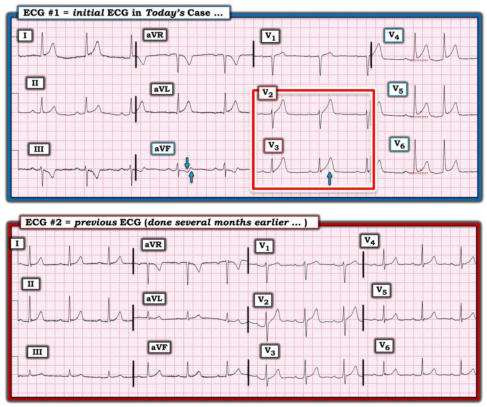
Khác biệt giữa điện tâm đồ #1 và điện tâm đồ #2 là gì?
Người chăm sóc cấp cứu có so sánh 2 điện tâm đồ ở Hình 1 — và ghi, “Tái cực sớm hay sóng T tối cấp — thay đổi tối thiểu so với bản ghi trước.” Đặt cả hai điện tâm đồ cạnh nhau như trong Hình 1 lại gợi ý điều ngược lại.
- Khác biệt nổi bật nhất giữa điện tâm đồ #1 và điện tâm đồ #2 nằm ở 2 chuyển đạo trong hình chữ nhật ĐỎ . Sóng T ở chuyển đạo V3 của điện tâm đồ #1 cao bằng sóng R ở chuyển đạo này — hay xét theo tỷ lệ, cao hơn nhiều so với sóng R đi kèm so với trên điện tâm đồ trước đây. Chẳng phải sóng T ở chuyển đạo V3 của điện tâm đồ #1 cũng đồ sộ hơn nhiều (với đáy rộng hơn nhiều) so với ở điện tâm đồ #2 sao?
- Sóng T ở chuyển đạo V2 của điện tâm đồ #1 cũng cao hơn xét theo tỷ lệ và “quá đầy đặn” (hypervoluminous) hơn so với trên bản ghi trước (đặc biệt khi xét đến biên độ sóng R tương đối ở chuyển đạo V2 của 2 bản ghi này).
- Các chuyển đạo V4, V5 và V6 ở điện tâm đồ #1 đều có ST chênh lên — điều không có trên bản ghi trước.
- Cuối cùng — trong khi sóng T âm mới xuất hiện ở chuyển đạo III của điện tâm đồ #1 không nhất thiết là dấu hiệu bất thường (do trục mặt phẳng trán lệch trái hơn với QRS chủ yếu âm ở chuyển đạo III của điện tâm đồ #1) — thì sóng T dạng xuống-lên (down-up) thấy ở chuyển đạo aVF của điện tâm đồ #1 rõ ràng không phải dấu hiệu bình thường (hai mũi tên XANH ở chuyển đạo này).
- Nhận định: Ở bệnh nhân có triệu chứng mới — tái cực sớm là chẩn đoán loại trừ, chỉ được đặt ra sau khi bạn đã loại trừ khả năng một biến cố cấp. Ở điện tâm đồ #1 — hình ảnh ST-T của 2 chuyển đạo trong hình chữ nhật ĐỎ không điển hình cho một biến thể tái cực — sóng T dạng xuống-lên ở chuyển đạo aVF cũng không — mức ST chênh lên ta thấy ở chuyển đạo V4, vốn kề cận các chuyển đạo V2,V3 rõ ràng bất thường, cũng không. Và các thay đổi ST-T động (dynamic) giữa điện tâm đồ #1 và điện tâm đồ #2 xác nhận một biến cố cấp đang diễn ra.
Điểm cần học:
Đặt 2 điện tâm đồ bạn đang so sánh cạnh nhau không tốn thêm thời gian. Làm như vậy giúp nhận ra dễ dàng hơn rất nhiều những khác biệt ST-T quan trọng mà nếu không thì thường không được phát hiện.